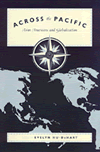
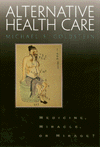
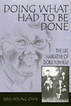
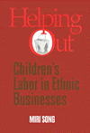
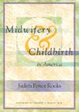
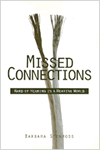
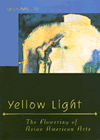

| 
|
Across
the Pacific
Asian Americans and Globalization
Hu-DeHart,
Evelyn
How transnational relationships and interactions in Asian American
communities are manifested
232 pp • 6x9 • Spring 1999
cloth 1-56639-710-3
EAN 978-1-56639-710-0
|
| 
|
Alternative
Health Care
Medicine, Miracle, or Mirage?
Goldstein,
Michael S.
What is alternative medicine? Why is it so popular? What's its
future in American health care?
280 pp • 5.5x8.25 • Spring 1999
paper 1-56639-678-6
EAN 978-1-56639-678-3
cloth 1-56639-677-8
EAN 978-1-56639-677-6
|
|
|
American
Conversations
Puerto Ricans, White Ethnics, and Multicultural Education
Bigler,
Ellen
An inside look at one revealing battle over multicultural education
296 pp • 5.5x8.25 • Spring 1999
paper 1-56639-688-3
EAN 978-1-56639-688-2
cloth 1-56639-687-5
EAN 978-1-56639-687-5
|
|
|
Baseball
Managers
Stats, Stories, and Strategies
Bloss,
Robert
All the Teams' Men from 1901 through 1998
400 pp • 6x9.2 • Spring 1999
cloth 1-56639-661-1
EAN 978-1-56639-661-5
|
|
|
The
Cardinals Encyclopedia
Eisenbath,
Michael, and Stan Musial
Photos, memorabilia, and the most comprehensive and detailed
account of Redbird baseball history
652 pp • 9x12 • Spring 1999
cloth 1-56639-703-0
EAN 978-1-56639-703-2
|
|
|
Deep
Vegetarianism
Fox,
Michael Allen
A compelling argument for a vegetarian lifestyle
234 pp • 5.5x8.25 • Spring 1999
paper 1-56639-705-7
EAN 978-1-56639-705-6
cloth 1-56639-704-9
EAN 978-1-56639-704-9
|
| 
|
Doing
What Had to Be Done
The Life Narrative of Dora Yum Kim
Chin,
Soo-Young
The history of Koreans in America as told through the remarkable
life story of one Korean American woman
272 pp • 6x9 • Spring 1999
paper 1-56639-694-8
EAN 978-1-56639-694-3
cloth 1-56639-693-X
EAN 978-1-56639-693-6
|
|
|
Fast
Lives
Women Who Use Crack Cocaine
Sterk,
Claire E.
An in-depth look at the lives, struggles, and dilemmas of women
who use crack cocaine
256 pp • 5.5x8.25 • Spring 1999
paper 1-56639-672-7
EAN 978-1-56639-672-1
cloth 1-56639-671-9
EAN 978-1-56639-671-4
|
| 
|
Helping
Out
Children's Labor in Ethnic Businesses
Song,
Miri
An examination of children's work roles in ethnic businesses
247 pp • 5.5x8.25 • Spring 1999
paper 1-56639-709-X
EAN 978-1-56639-709-4
cloth 1-56639-708-1
EAN 978-1-56639-708-7
|
|
|
Heroes
in Hard Times
Cop Action Movies in the U.S.
King,
Neal
An in-your-face look at the cop action movie genre
282 pp • 5.5x8.25 • Spring 1999
paper 1-56639-702-2
EAN 978-1-56639-702-5
cloth 1-56639-701-4
EAN 978-1-56639-701-8
|
|
|
Liberating
Method
Feminism and Social Research
DeVault,
Marjorie L.
One researcher examines the dimensions of feminist research
275 pp • 6x9 • Spring 1999
paper 1-56639-698-0
EAN 978-1-56639-698-1
cloth 1-56639-697-2
EAN 978-1-56639-697-4
|
|
|
Love,
Sorrow, and Rage
Destitute Women in a Manhattan Residence
Waterston,
Alisse
Poor women's lives and stories of the street, etched into a narrative
of the heart
235 pp • 5.5x8.25 • Spring 1999
paper 1-56639-707-3
EAN 978-1-56639-707-0
cloth 1-56639-706-5
EAN 978-1-56639-706-3
|
|
|
Meaning
of a Disability
The Lived Experience of Paralysis
Robillard,
Albert R.
A self-study of paralysis and meaningful interaction
208 pp • 5.5x8.25 • Spring 1999
paper 1-56639-676-X
EAN 978-1-56639-676-9
cloth 1-56639-675-1
EAN 978-1-56639-675-2
|
| 
|
Midwifery
and Childbirth in America
Rooks,
Judith Pence, and Charles S. Mahan, M.D.
The definitive account of the many forces that intersect over
the issue of childbirth
New in Paperback!
576 pp • 7x10 • Fall 1997
paper 1-56639-711-1
EAN 978-1-56639-711-7
|
| 
|
Missed
Connections
Hard of Hearing in a Hearing World
Stenross,
Barbara
A new kind of self-help book for the hearing impaired
139 pp • 5.5x8.25 • Spring 1999
paper 1-56639-682-4
EAN 978-1-56639-682-0
cloth 1-56639-681-6
EAN 978-1-56639-681-3
|
|
|
Neither
Separate Nor Equal
Women, Race, and Class in the South
Smith,
Barbara Ellen
The diverse lives of contemporary Southern women
296 pp • 6x9 • Spring 1999
paper 1-56639-680-8
EAN 978-1-56639-680-6
cloth 1-56639-679-4
EAN 978-1-56639-679-0
|
|
|
Ordinary
Lives
Platoon 1005 and the Vietnam War
Ehrhart,
W. D.
A poet's search for his 1966 Marine platoon
344 pp • 6x9 • Spring 1999
cloth 1-56639-674-3
EAN 978-1-56639-674-5
|
|
|
Queer
Family Values
Debunking the Myth of the Nuclear Family
Lehr,
Valerie
The flaw in the fight for gay and lesbian marriage
224 pp • 6x9 • Spring 1999
paper 1-56639-684-0
EAN 978-1-56639-684-4
cloth 1-56639-683-2
EAN 978-1-56639-683-7
|
|
|
Songs
of the Caged, Songs of the Free
Music and the Vietnamese Refugee Experience
Reyes,
Adelaida
Viewing the Vietnamese refugee experience through its music
248 pp • 5.5x8.25 • Spring 1999
paper 1-56639-686-7
EAN 978-1-56639-686-8
cloth 1-56639-685-9
EAN 978-1-56639-685-1
|
|
|
The
Trial Lawyer's Art
Schrager,
Sam
The truth about courtroom craft
264 pp • 6x9 • Spring 1999
cloth 1-56639-673-5
EAN 978-1-56639-673-8
|
|
|
Tutoring
Matters
Everything You Always Wanted To Know About How To Tutor
Rabow,
Jerome, Tiffani Chin, and Nima Fahimian
The authoritative manual for both the aspiring and seasoned tutor
240 pp • 5.5x8.25 • Spring 1999
paper 1-56639-696-4
EAN 978-1-56639-696-7
|
|
|
Understanding
Dogs
Living and Working with Canine Companions
Sanders,
Clinton
What your dog really means to you-and what you mean to your dog
224 pp • 6x9 • Spring 1999
paper 1-56639-690-5
EAN 978-1-56639-690-5
cloth 1-56639-689-1
EAN 978-1-56639-689-9
|
|
|
Weaving
Work and Motherhood
Garey,
Anita Ilta
A new understanding of working mothers
240 pp • 6x9 • Spring 1999
paper 1-56639-700-6
EAN 978-1-56639-700-1
cloth 1-56639-699-9
EAN 978-1-56639-699-8
|
| 
|
Yellow
Light
The Flowering of Asian American Arts
Ling,
Amy
Is there a distinctive Asian American creative sensibility?
384 pp • 7x10 • Spring 1999
cloth 1-56639-670-0
EAN 978-1-56639-670-7
|